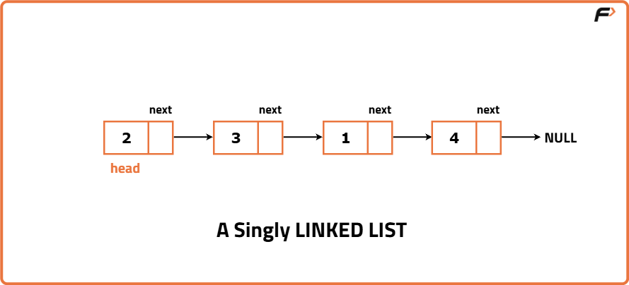
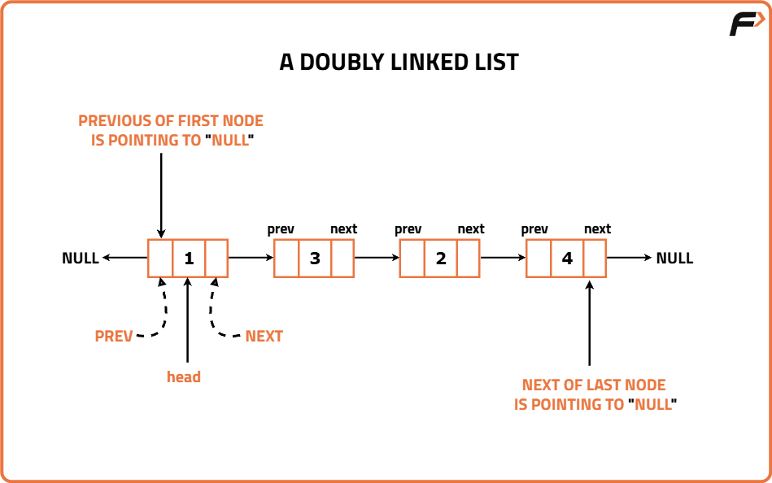

Introduction to Doubly Linked List
Recap of Linked List

Before exploring doubly linked lists, let's refresh our knowledge of linked lists. Linked lists are linear data structures consisting of nodes, each containing data and a reference (or pointer) to the next node. This setup allows for dynamic memory allocation and efficient insertions and deletions.
A significant characteristic of singly linked lists is their unidirectional nature, allowing traversal in only one direction i.e forward. Moving backward, such as going from node at 3rd position to node at 1st position is not possible because each node in a singly linked list holds two pieces of information: the data (an integer value in this case) and a pointer that indicates the address of the next node. This structure enables efficient forward navigation, but the absence of a backward pointer restricts reverse traversal.
Code for Singly Linked List
#include <bits/stdc++.h>
using namespace std;
// Node class represents a node in the linked list
class Node {
public:
int data; // Data value
Node* next; // Pointer to next node
// Constructor with data and next
Node(int data1, Node* next1) {
data = data1;
next = next1;
}
// Constructor with only data
Node(int data1) {
data = data1;
next = nullptr;
}
};
int main() {
// Create an array
vector<int> arr = {2, 5, 8, 7};
// Create first node
Node* y = new Node(arr[0]);
// Print memory location of node
cout << y << '\n';
// Print data stored in node
cout << y->data << '\n';
return 0;
}
The code for Singly Linked List creates a class Node which has two member variables:
1. int data: This holds the data value that the node stores, which can be of any data type (in this case, an integer).
2. Node* next: This is a pointer to the next node in the linked list. It allows the nodes to be linked together, forming a sequence.
The class has two constructors:
1. The first constructor takes both the data and a pointer to the next node as parameters. It initializes the data and the next node accordingly.
2. The second constructor takes only the data as a parameter and sets it next to nullptr. It could be that this node is the end of the list since there is no reference to the next node. We can append the next of this node later adding more nodes to the linked list.
Doubly Linked List
Doubly Linked Lists, as the name suggests, allows 2-way traversal by introducing two pointers in each node. This enables seamless traversal in both directions, making them a valuable tool for various advanced data structure applications.
Code for Doubly Linked List
#include <bits/stdc++.h>
using namespace std;
// Class representing a node in Doubly Linked List
class Node {
public:
// Stores data of the node
int data;
// Pointer to the next node
Node* next;
// Pointer to the previous node
Node* prev;
// Constructor when data, next and prev are provided
Node(int data1, Node* next1, Node* prev1) {
data = data1;
next = next1;
prev = prev1;
}
// Constructor when only data is provided
Node(int data1) {
data = data1;
next = nullptr;
prev = nullptr;
}
};
int main() {
// Initializing an array to create nodes
vector<int> arr = {2, 5, 8, 7};
// Creating the head node of the doubly linked list
Node* head = new Node(arr[0]);
// Printing the address of the head node
cout << head << '\n';
// Printing the data stored in head node
cout << head->data << '\n';
return 0;
}
Node* prev : The introduction of the previous pointer is the key change from a singly linked list node. This pointer allows traversal in the backward direction, making it suitable for doubly linked lists.
Constructors: Both constructors have been updated to initialize the new previous pointer. In the first constructor, Node(int data1, Node* next, Node* prev), prev is initialized with the provided value. In the second constructor, Node(int data1), the prev is initialized to nullptr, just like the next.
These changes differentiate the Node class for a doubly linked list, allowing it to maintain bidirectional links between nodes, as opposed to the unidirectional links in a singly linked list node.
